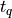
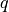

Managing Transformations over Time¶
In applications, where the transformations between coordinate frames are
dynamic (i.e. changing over time), consider using
TemporalTransformManager. In contrast
to the TransformManager,
which deals with static transfomations, it provides an interface for the logic
needed to interpolate between transformation samples available over time.
We can visualize the lifetime of two dynamic transformations (i.e. 3 coordinate systems) in the figure below. Each circle represents a sample (measurement) holding the transformation from the parent to the child frame.

A common use-case is to transform points originating from system A to system B at a specific point in time (i.e. , where  refers to query) Imagine two moving robots A & B reporting their observations between each other.
Preparing the transformation sequences¶
First, you need to prepare the transfomation sequences using the
NumpyTimeseriesTransform class:
# create entities A and B together with their transformations from world
duration = 10.0 # [s]
sample_period = 0.5 # [s]
velocity_x = 1 # [m/s]
time_A, pqs_A = create_sinusoidal_movement(
duration, sample_period, velocity_x, y_start_offset=2.0, start_time=0.1
)
time_B, pqs_B = create_sinusoidal_movement(
duration, sample_period, velocity_x, y_start_offset=-2.0, start_time=0.35
)
# package them into an instance of `TimeVaryingTransform` abstract class
transform_WA = NumpyTimeseriesTransform(time_A, pqs_A)
transform_WB = NumpyTimeseriesTransform(time_B, pqs_B)
In this example, the screw linear interpolation (ScLERP) will be used
(which operates on dual quaternions, refer to
pq_from_dual_quaternion()).
For more control, you may want to add your own implementation of the
abstract class TimeVaryingTransform.
Next, you need to pass the transformations to an instance of
TemporalTransformManager:
tm = TemporalTransformManager()
tm.add_transform("A", "world", transform_WA)
tm.add_transform("B", "world", transform_WB)
Transform between coordinate systems¶
Finally, you can transform between coordinate systems at a particular time :
query_time = 4.9 # [s]
A2B_at_query_time = tm.get_transform_at_time("A", "B", query_time)
# transform the origin of A in A (x=0, y=0, z=0) to B
origin_of_A_pos = pt.vector_to_point([0, 0, 0])
origin_of_A_in_B_xyz = pt.transform(A2B_at_query_time, origin_of_A_pos)[:-1]
The coordinates of A’s origin (blue diamond) transformed to B are visualized in the plot below: